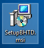
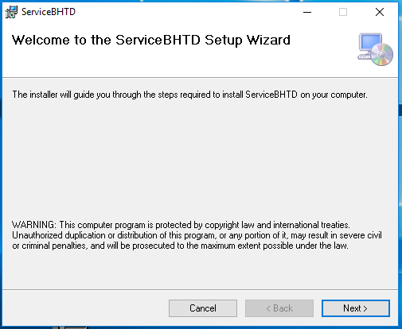
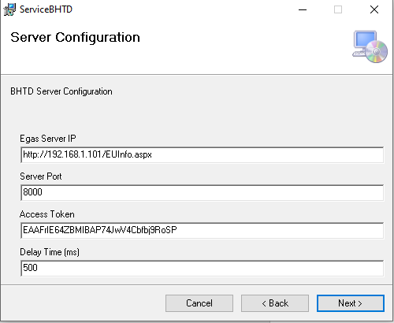
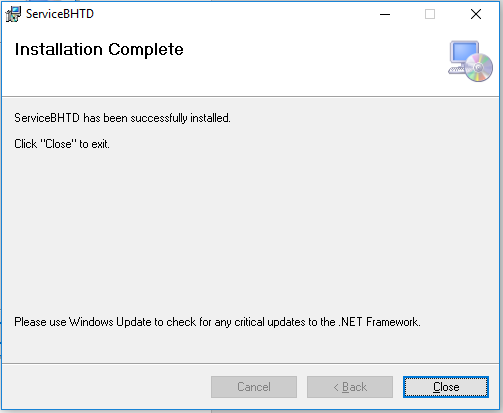
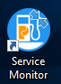
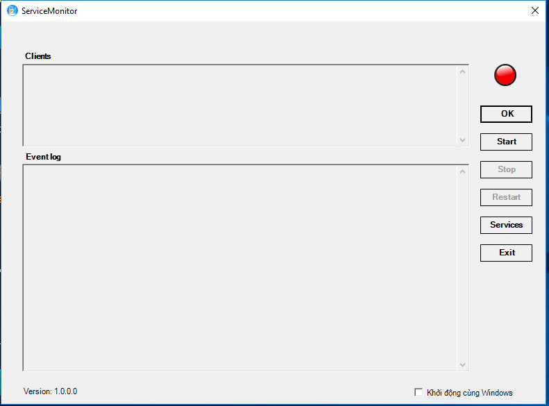

- Đăng nhập máy tính với quyền Administrator. Ngoài ra, yêu cầu máy tính cài đặt cần phải có dotNet Framework 4.5.2.
- Nếu chưa cài framework này, cần cài đặt trước khi bắt đầu cài BHTĐ. Tải phiên bản Offline Installer ở trang chủ Microsoft tại đây
- Click vào file “SetupBHTD.msi”  là file dùng để cài đặt chương trình để bắt đầu cài đặt.
- Ở cửa sổ bật lên, người dùng click vào ô “Next” để tiếp tục cài đặt. Nếu hủy cài đặt, có thể chọn vào “Cancel” hoặc đóng cửa sổ cài đặt bằng dấu X ở góc trên cùng bên phải của cửa sổ

- Cửa sổ tiếp theo dùng để nhập các thông tin kết nối tới hệ thống EGAS Client đang chạy tại cửa hàng và cấu hình hoạt động của chương trình. Trong đó:
+ Ô “Egas Server IP” được mặc định sẵn là “http://192.168.1.101/EUInfo.aspx” - là đường dẫn kết nối để kết nối tới hệ thống EGAS Client
+ Server Port: Là cổng kết nối tương ứng đến hệ thống BHTĐ trên máy cài đặt chương trình. Mặc định là 8000.
+ Access Token: Là Token dùng để kết nối tới dịch vụ BHTĐ. Mặc định là “EAAFrIE64ZBMIBAP74JwV4Cbfbj9RoSP”.
+ Delay Time (ms): Là thời gian chờ để làm mới màn hình scadar khi có người bơm hàng. Mặc định là 500 miliseconds.
- Sau đó, có thể ấn “Next” để tiếp tục việc cài đặt. Cửa sổ tiếp theo dùng để cấu hình xem hệ thống có cho phép thanh toán qua Momo không. Nếu có hãy tích vào ô. Mặc định sẽ là có thanh toán Momo
- Sau đó, có thể ấn “Next” để tiếp tục việc cài đặt.
- Cửa sổ tiếp theo dùng để cấu hình vị trí cài đặt chương trình BHTĐ. Mặc định, hệ thống sẽ được cài đặt vào thư mục “C:\Program Files (x86)\BHTD\ServiceBHTD\”. Người dùng có thể chỉnh sửa vị trí cài đặt này nếu cần.
- Option lựa chọn “Everyone” hoặc “Just me” dùng để định nghĩa chương trình này cài đặt cho tất cả các User trên máy hay chỉ cho User hiện tại của máy tính. Mặc định chọn “Everyone”. Lưu ý: không nên chọn “Just me” vì máy tính bán hàng có thể có nhiều User khác nhau sử dụng.
- Sau đó, có thể ấn “Next” để tiếp tục việc cài đặt.
- Cửa sổ tiếp theo dùng để xác nhận việc cài đặt chương trình. Người dùng chọn vào “Next” để bắt đầu việc cài đặt. Nếu thấy các thông tin cấu hình chưa đúng, có thể chọn “Back” để kiểm tra lại và chỉnh sửa theo các bước bên trên nếu cần.
Lưu ý: Khi chọn bắt đầu cài đặt, người dùng cần có bước xác thực quyền Administrator của máy tính. Việc cài đặt sẽ mất khoảng 2~5 giây
- Khi cài đặt thành công, màn hình hiển thị bước cuối cùng như sau:
Nếu không đến được màn hình như trên thì tức là cài đặt không thành công. Có thể thử cài đặt lại theo các bước trên.
Khi cài đặt thành công, trên màn hình Desktop của máy tính sẽ xuất hiện Icon của chương trình . Click vào icon để bắt đầu bán hàng tự động. Cửa chương trình xuất hiện như sau: 
Lưu ý: Khi mở chương trình lên sẽ có yêu cầu cấp quyền Admin, chọn vào ô “Yes” để mở chương trình. Khi cửa sổ được mở ra, ô Evenlog phải là ô trống như hình dưới, nếu ô Event log có hiển thị thông báo thì tức là chương trình cài đặt gặp vấn đề.
Khi người dùng muốn Stop, Restart và Exit chương trình thì sẽ phải nhập mật khẩu tương ứng với mỗi tác vụ. Với Stop mật khẩu là stop, Restart – restart và Exit – exit.
Có thể tích vào ô “Khởi động cùng Windows” để chương trình tự khởi động khi máy tính khởi động lại.
